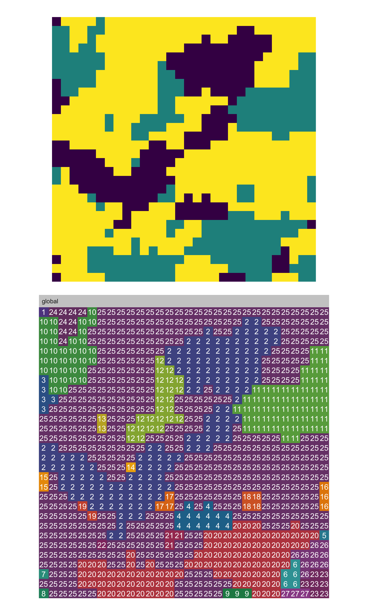
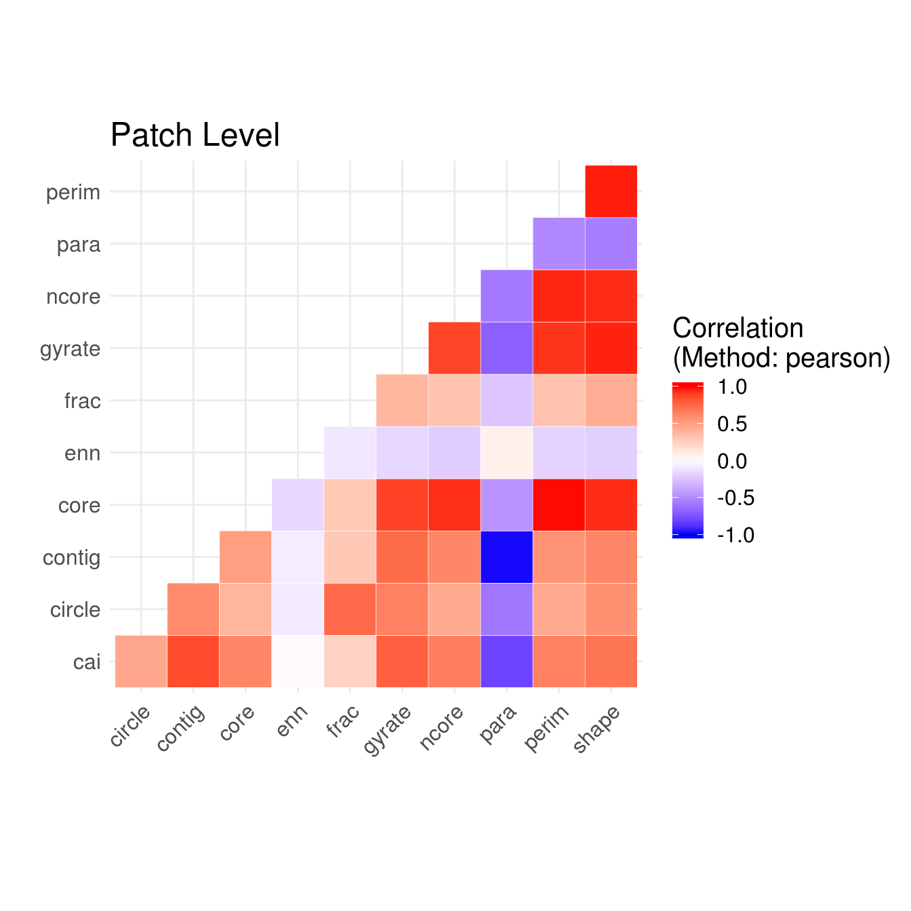
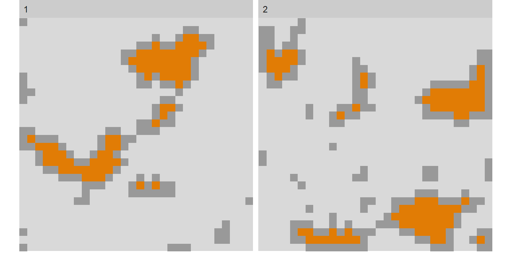
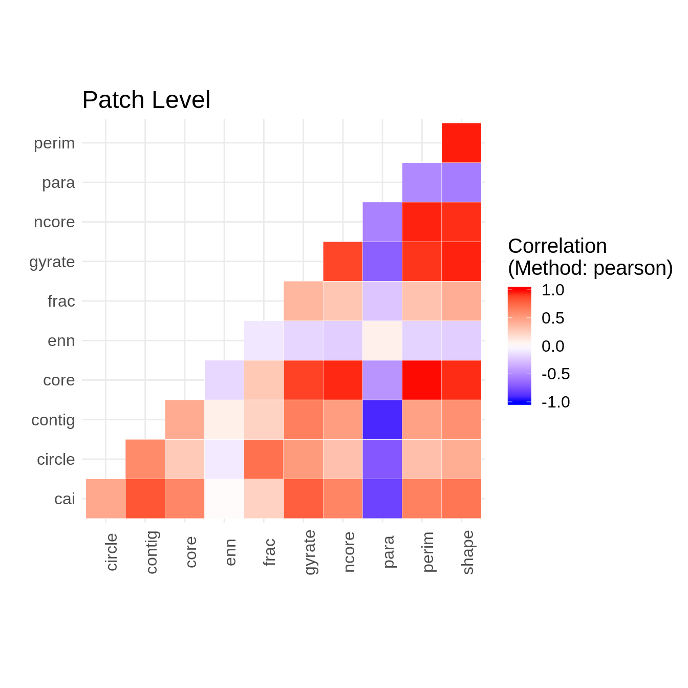

Utility functions
2018-12-03
utility.RmdVisualisization functions
Visualizing patches
To visualize patches in a landscape and encode each patch with an ID that can be used to compare a landscape metric with the actual landscape you can use the auxiliary visualisation function show_patches():
library(landscapetools)
library(patchwork)
library(landscapemetrics)
library(ggplot2)
# Create plot of the landscape
landscape_plot <- landscapetools::util_plot(landscape) +
ggplot2::theme_void() +
ggplot2::guides(fill = FALSE) +
ggplot2::coord_equal()
# Plot landscape + landscape with labeled patches
landscape_plot +
show_patches(landscape) +
patchwork::plot_layout(ncol = 1)
You can also plot all patches of each class grouped.

To show only the core area, there is the visualization function show_cores. The arguments are similar to show_patches()

Lastly, you can also “fill” the colours of each patch according to its value of a certain patch level metric, e.g. the patch area, using show_lsm(). You can chose if the label should be the patch id or the actual value of the landscape metric (label_lsm = TRUE/FALSE).
# fill patch according to area
show_lsm(landscape, what = "lsm_p_area", class = "global", label_lsm = TRUE)
Show correlation
Selecting meaningful landscape metrics for your field of research is difficult, as many landscape metrics are very abstract and the common approach is often simply to calculate as many as possible.
To select at the least that ones for your landscape and research question that are not highly correlated, you can use the function show_correlation() to get a first insight into the correlation of the metrics you calculated:

Building blocks
Get patches
landscapemetrics makes internally heavy use of an connected labeling algorithm and exports an re-implementation of this algorithm (get_patches). The function return a list, where each list entry includes all patches of the corresponding class. The patches are labeld from 1…to n.
# get a list of all patches for each class
get_patches(landscape)
#> $`1`
#> class : RasterLayer
#> dimensions : 30, 30, 900 (nrow, ncol, ncell)
#> resolution : 1, 1 (x, y)
#> extent : 0, 30, 0, 30 (xmin, xmax, ymin, ymax)
#> coord. ref. : NA
#> data source : in memory
#> names : layer
#> values : 1, 9 (min, max)
#>
#>
#> $`2`
#> class : RasterLayer
#> dimensions : 30, 30, 900 (nrow, ncol, ncell)
#> resolution : 1, 1 (x, y)
#> extent : 0, 30, 0, 30 (xmin, xmax, ymin, ymax)
#> coord. ref. : NA
#> data source : in memory
#> names : layer
#> values : 1, 14 (min, max)
#>
#>
#> $`3`
#> class : RasterLayer
#> dimensions : 30, 30, 900 (nrow, ncol, ncell)
#> resolution : 1, 1 (x, y)
#> extent : 0, 30, 0, 30 (xmin, xmax, ymin, ymax)
#> coord. ref. : NA
#> data source : in memory
#> names : layer
#> values : 1, 4 (min, max)Get adjacencies
Adjacencies are a central part for landscape metrics, so calculating them quick and in a flexible way is key for e.g. developing new metrics. Hence, landscapemetrics exports a function that can calculate adjacencies in any number if directions when provided with a binary matrix (NA / 1 - NA are cells that would be left out for looking at adjacencies).
# calculate full adjacency matrix
get_adjacencies(landscape, neighbourhood = 4)
#> 1 2 3
#> 1 520 43 137
#> 2 43 704 184
#> 3 137 184 1528
# count diagonal neighbour adjacencies
diagonal_matrix <- matrix(c(1, NA, 1,
NA, 0, NA,
1, NA, 1), 3, 3, byrow = TRUE)
get_adjacencies(landscape, diagonal_matrix)
#> 1 2 3
#> 1 466 53 167
#> 2 53 602 240
#> 3 167 240 1376
# equivalent with the raster package:
adj_raster <- function(landscape){
adjacencies <- raster::adjacent(landscape,
cells = 1:raster::ncell(landscape),
directions = 4,
pairs = TRUE)
table(landscape[adjacencies[,1]], landscape[adjacencies[,2]])
}
# compare the two implementations
library(bench)
bench::mark(
get_adjacencies(landscape, neighbourhood = 4),
adj_raster(landscape),
iterations = 100,
check = FALSE
)
#> # A tibble: 2 x 10
#> expression min mean median max `itr/sec` mem_alloc n_gc n_itr
#> <chr> <bch:> <bch:t> <bch:> <bch:t> <dbl> <bch:byt> <dbl> <int>
#> 1 get_adjac… 98µs 101.7µs 99.5µs 198.4µs 9833. 6.05KB 0 100
#> 2 adj_raste… 10.1ms 12.6ms 11.8ms 19.1ms 79.3 1.69MB 4 96
#> # ... with 1 more variable: total_time <bch:tm>
adj_raster(landscape) == get_adjacencies(landscape, 4)
#>
#> 1 2 3
#> 1 TRUE TRUE TRUE
#> 2 TRUE TRUE TRUE
#> 3 TRUE TRUE TRUEGet nearest neighbour
landscapemetrics implements a memory efficient and quite fast way to calculate the nearest neighbour between classes in a raster (or matrix).
# run connected labeling for podlasie raster
patches <- get_patches(landscape, class = 1)[[1]]
# calculate the minimum distance between patches in a landscape
min_dist <- get_nearestneighbour(patches)
# create a function that would do the same with the raster package
nearest_raster_fun <- function(patches) {
np_class <- patches %>%
raster::values() %>%
unique() %>%
na.omit() %>%
length()
points_class <- patches %>%
raster::rasterToPoints() %>%
tibble::as.tibble() %>%
purrr::set_names(c("x", "y", "id"))
minimum_distance <- np_class %>%
seq_len() %>%
purrr::map_dbl(function(patch_ij) {
patch_focal <- dplyr::filter(points_class, id == patch_ij)
patch_others <-
dplyr::filter(points_class, id != patch_ij)
minimum_distance <-
raster::pointDistance(patch_focal[1:2],
patch_others[1:2],
lonlat = FALSE) %>%
min()
})
tibble::tibble(id = unique(sort(points_class$id)),
distance = minimum_distance)
}
# compare the two implementations
library(bench)
bench::mark(
get_nearestneighbour(patches),
nearest_raster_fun(patches),
iterations = 100
)
#> # A tibble: 2 x 10
#> expression min mean median max `itr/sec` mem_alloc n_gc
#> <chr> <bch:t> <bch:t> <bch:t> <bch:t> <dbl> <bch:byt> <dbl>
#> 1 get_neare… 2.04ms 3.05ms 2.87ms 5.32ms 328. 141.72KB 1
#> 2 nearest_r… 12.76ms 16.91ms 14.63ms 30.64ms 59.1 1.24MB 6
#> # ... with 2 more variables: n_itr <int>, total_time <bch:tm>Get circumscribing circle
To get the smallest circumscribing circle that includes all cells of the patch, simply run get_circumscribingcircle(). The result returns the diameter for each circle that includes all cells of each patch. This includes not only the cell centers but the whole cells using the cells corners.